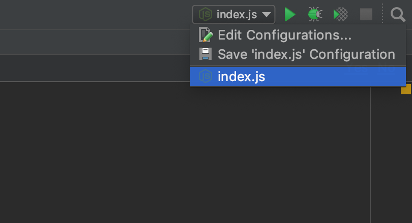
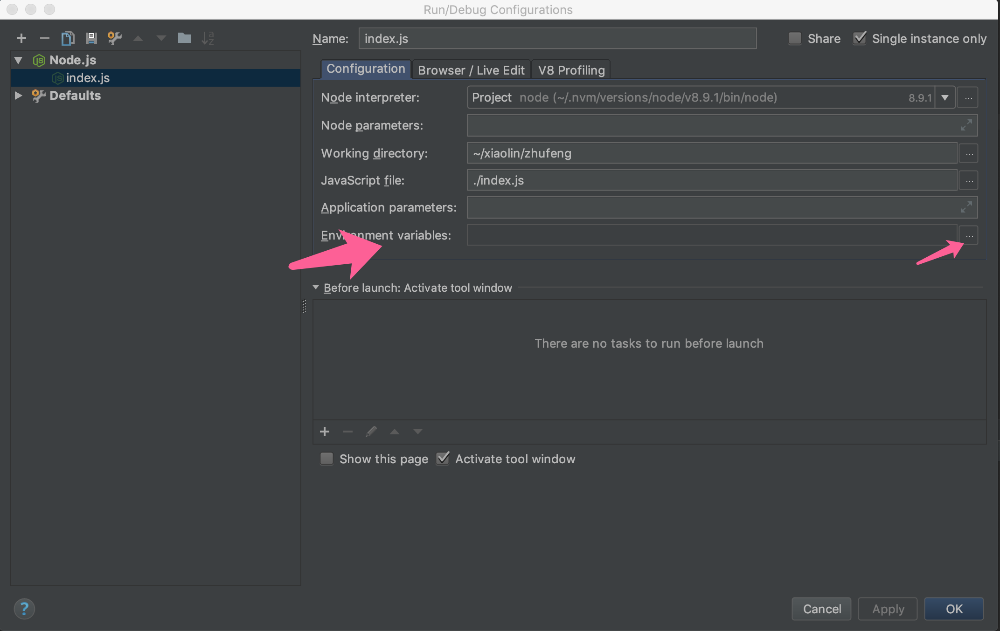
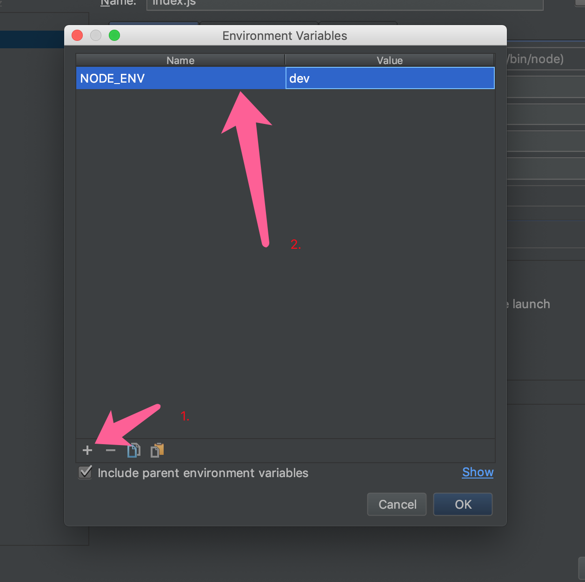

场景
我们在开发的时候经常会有生产环境和开发环境，这两种环境中可能用到不同的配置，比如本地域名和线上域名，如何去区别它们，是我今天要谈到的一个问题。
process对象与NODE_ENV
Node.js中有一个全局的对象process，这个对象无需require(),它控制着Node.js的进程的信息。
它有一个属性，叫做env。我下面将会使用这个属性，在它里面挂载一个NODE_ENV属性，我们通过这个NODE_ENV来判断开发环境和生产环境。
获取NODE_ENV
由于我们有process对象，所以可以直接在任意代码处获取到NODE_ENV，并根据该对象的值判断环境，新建一个index.js，如下
1 | /** |
设置NODE_ENV
我们既然能够获取到NODE_ENV，那么我们如何设置这个NODE_ENV。即我们要在生产环境设置NODE_ENV值为production，在开发环境设置NODE_ENV的值为dev。
首先开起你的命令行，在windows下是CMD，在mac下是terminal。
windows下：
1 | set NODE_ENV=dev node index.js |
mac下：
1 | export NODE_ENV=dev node index.js |
现在在当前窗口下，输出的url就是http://localhost:3000，关闭窗口后需要重新设置
在webstorm中设置NODE_ENV
- 点击右上角的edit configuration
- avatar
- 找到environment variables

avatar
- 设置NODE_ENV

avatar
使用cross-env实现跨平台设置NODE_ENV
首先初始化一个package.json
1 | npm init -y |
然后安装cross-env
1 | npm i cross-env -D |
接着在package.json的scripts中加入下面的代码
1 | { |
接着在命令行中运行npm run test既可看到结果
总结
这就是NODE_ENV的作用，这个变量是自定义的名字，但是env这个属性不是哦。大家了解了吗？欢迎指正，交流！